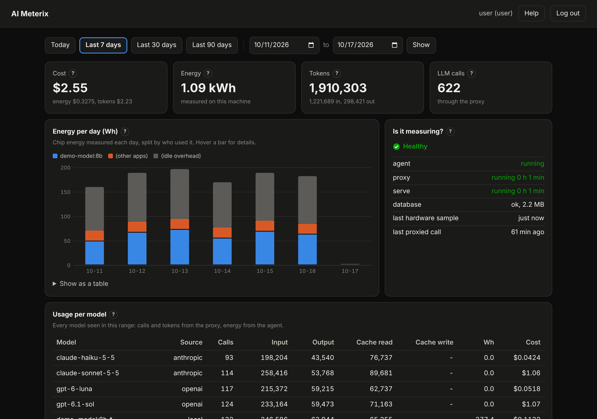

v0.1.2 preview · open source · macOS
Know what your AI
Know what your AI
really costs.
AI Meterix measures the energy your Mac spends on AI, counts every token each model uses, and turns both into a clear daily cost. All on your machine.
$ curl -fsSL https://github.com/apipas/aimeterix/releases/latest/download/install.sh | sh
Built for people who ship with AI
Developers, indie makers and small teams who run local models or pay for cloud AI APIs.
⚡
Energy
Reads your chip's power every 10 seconds and splits it by app and by local model (llama.cpp, Ollama).
🔢
Tokens
A local proxy counts input, output and cache tokens of every call, streaming included. Ten cloud providers built in.
💶
Cost
Turns energy and tokens into one daily cost with your electricity rate and dated public token prices.
How it works
Three small services on your Mac. Your apps keep their own API keys.
Your appsAI calls
Mac chipCPU, GPU, power
→
proxy127.0.0.1:8787
agentevery 10 s
→
Databaseon your Mac
Dashboard127.0.0.1:8788
Private by design
Your data stays on your Mac.
- Kept: model names, token counts, timings, energy
- Never kept: prompts, answers, API keys
- Local only: everything listens on 127.0.0.1
- No account, no telemetry, no update check